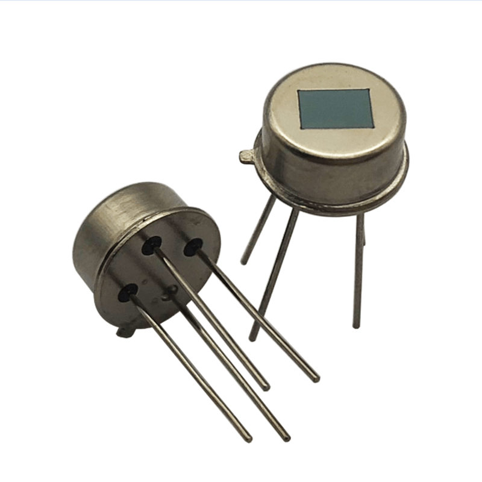

PIR (Sensor de movimiento), de https://www.freepng.es/png-ex7kqz/
Por definición un sensor según la RAE "Dispositivo que detecta una determinada acción externa, temperatura, presión, etc., y la transmite adecuadamente.". (RAE, 2021)
¿Te ha pasado que cuando pasas cerca de bombillos, estos se encienden solos?
En electrónica, la física aplicada que estudia el flujo de los electrones en circuitos eléctricos, existen los llamados sensores y sirven detectar cambios, en nuestro caso, los PIR (sensores de movimiento) detecta cuando algo pasa cerca de él, la energía llega a la bombilla, por eso en algunos baños la luz se enciende sola.
Los sensores están en todas partes y hay de todo tipo: Sensores de movimiento, de agua, de Luz, de timbre o de temperatura. Estos almacenan datos que pueden ser analizados para determinar patrones, prevenir tendencias, optimizar la producción, monitorear el entorno, planificar o controlar.
Ya sabemos que los sensores saben diferenciar condiciones del ambiente, pero ¿Qué señales envían?, ¿Cómo las envían? Y más importante ¿A quién se las envían?.
En primer lugar tenemos las señales análogas, seguramente alguna vez has utilizado un radio, giras una perilla para cambiar a tu emisora favorita la "98.9 FM", notas que cuando giras en sentido de las manecillas del reloj el número subes de emisora y al contrario de las manecillas bajas de emisor, eso es un sistema análogo dónde a partir de variación del flujo de energía obtenemos un u otro estado, podemos verlo en la siguiente grafica.
Al principio tenemos una línea constante en 0v, esto quiere decir que no hay energía pasando de momento, luego en 25% Duty Cycle empezamos a ver cambios, la energía momentáneamente sube a 5v que significa que está pasando corriente y luego baja de nuevo; si notas, cada vez el espacio donde no pasa energía es menor y al final la energía está al 100%, cuando variamos el porcentaje es como si moviéramos la perilla del radio, cada vez es más fuerte y esto en un motor electro sería la rapidez con la que gira.
Un sensor de corriente de agua utilizaría este principio para indicarnos cuanto flujo pasa en su momento.
Un bit es una manera de representar estados, 0 es apagado y 1 es encendido, como un interruptor para encender la bombilla de tu casa, en nuestro caso esto en los sensores es muy poderoso porque si bien todo podría ser a partir de señales análogas la ventaja reside en la exactitud.
Imagina que vas en un auto y tus retrovisores están rotos, pero para contento tuyo tienes un sensor que te indica con una luz roja si ya no puedes avanzar más porque te chocas, pues bien cuando la vez sabes que debes parar y estás tranquilo, si fuera análogo la luz paulatinamente se haría roja y sería tu decisión parar, por eso de manera digital puedes depositar tu confianza en los sensores.
Es así como cada sensor específico tiene un tipo de señal asociada dependiendo de su funcionalidad.
REAL ACADEMIA ESPAÑOLA: Diccionario de la lengua española, 23.ª ed., [versión 23.4 en línea]. https://dle.rae.es [10 de octubre 2021].